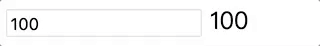
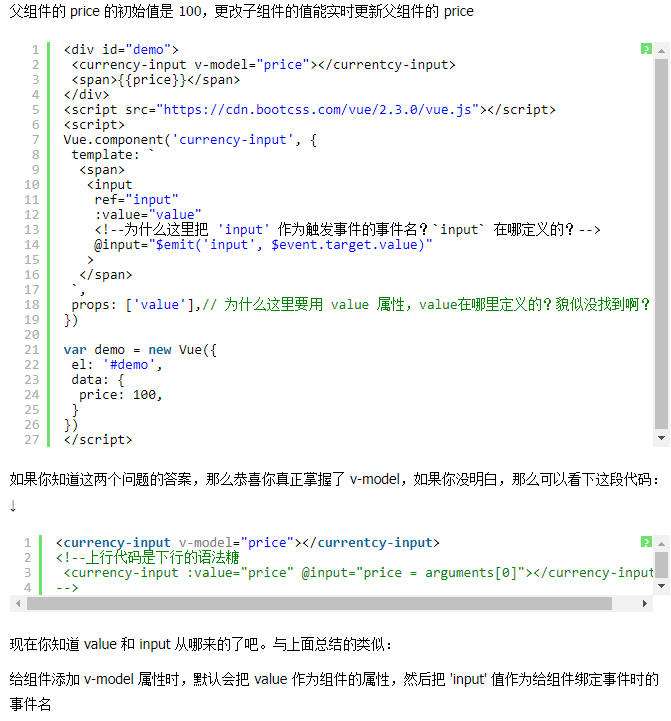
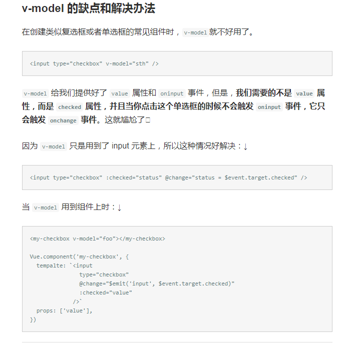
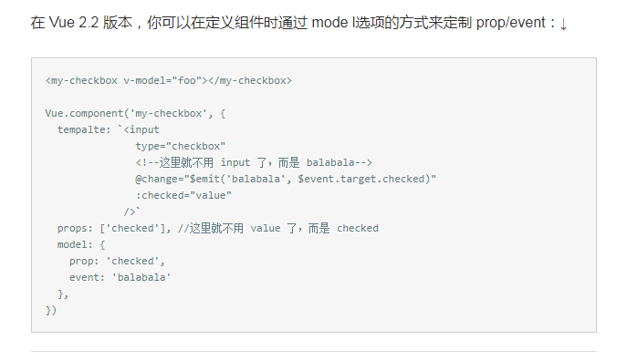

官网中这个v-model语法糖介绍的不是很详细，然后自己找到一些栗子，自己先消化一下吧
首先一点 看到这个v-model语法糖，就会很自燃的想到angularjs中的ng-model指令。但是他们是有本质区别的， v-model只是vue.js中的一个语法糖，并不是ng-model用于数据双向绑定的指令。
在 Vue 中，有许多方法和 Angular 相似，这主要是因为 Angular 是 Vue 早期开发的灵感来源。然而，Augular 中存在许多问题，在 Vue 中已经得到解决。
v-model 用在 input 元素上时
v-model虽然很像使用了双向数据绑定的 Angular 的 ng-model，但是 Vue 是单项数据流，v-model 只是语法糖而已：↓
第一行的代码其实只是第二行的语法糖。然后第二行代码还能简写成这样：↓
要理解这行代码，首先你要知道 input 元素本身有个 oninput 事件，这是 HTML5 新增加的，类似 onchange ，每当输入框内容发生变化，就会触发 oninput ，把最新的value传递给 sth。
如果你不知道 $event 是从哪来的，那你需要点击它再复习一下文档。
我们仔细观察语法糖和原始语法那两行代码，可以得出一个结论：
在给 input 元素添加 v-model 属性时，默认会把 value 作为元素的属性，然后把 'input' 事件作为实时传递 value 的触发事件
v-model 用在组件上时
v-model 不仅仅能在 input上用，在组件上也能使用，下面是一个和 Vue 官网教程类似的例子（在看这个例子时我们要考虑两个问题）：
   